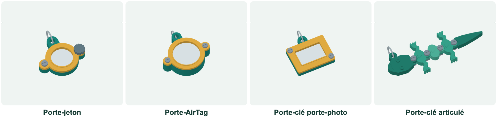

OBSERVER · EXPÉRIMENTER · EXPLIQUER
Préparer puis vérifier son objet imprimé
Choisis ton objet, comprends son mécanisme et prépare ton plan coté. Télécharge ton dossier PDF puis dessine toi-même chaque pièce dans le logiciel 3D du PC. Le gecko est un exemple : ta forme reste libre.

✎ Garde ta feuille à côté de toi.Ordinateur : manipulations et mesures simulées. Papier : relevés, réponses, calculs et croquis.
Q4 · Pourquoi le mouvement bloque-t-il ?
Compare un défaut de serrage et un défaut de cote. Observe avant de choisir une correction. Reprends ensuite cette méthode sur le prototype distribué.
Trace : cause vérifiée → correction → résultat avant/après. Une correction de cote exige de produire une nouvelle pièce ; un réglage de serrage agit sur le montage existant.
Des observations pour expliquer
- Q1 à Q4 : suis ta fiche. Conserve les réglages, les relevés et les explications sur papier.
Appuie ton explication sur une valeur, un changement observé ou une comparaison. Distingue ce que montre le modèle et ce qui reste à vérifier.